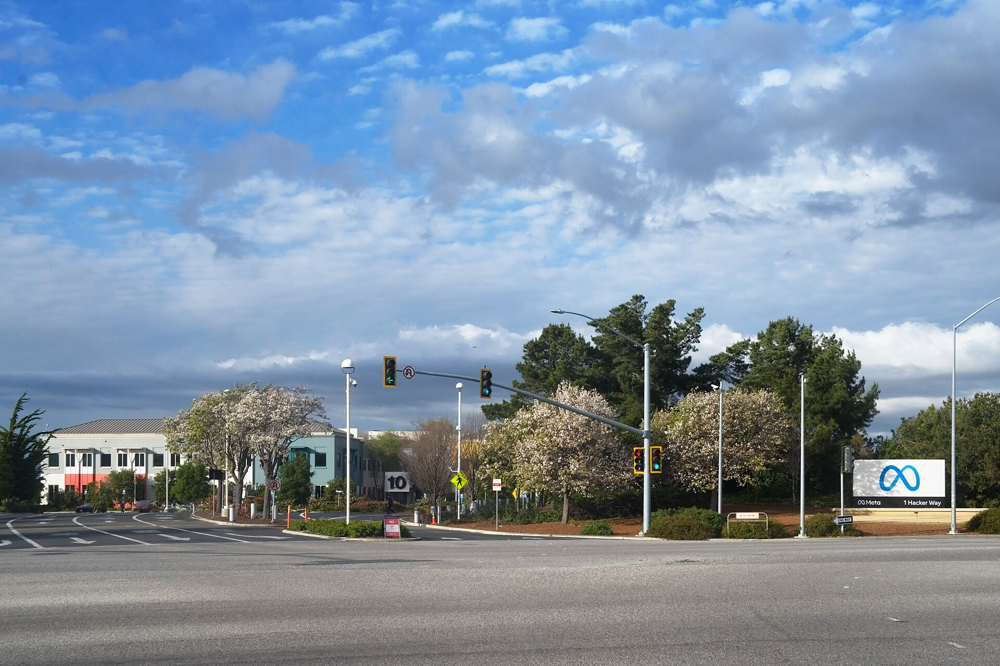

Meta lifts its equity raise to $97.5 billion, selling $25 billion of stock at $625 as Nvidia and AMD buy in

Meta Platforms sold 40 million Class A shares at $625 each on Tuesday, raising $25 billion, alongside $12.5 billion of 6.5% stock, after lifting the whole program to $97.5 billion from $95 billion, according to its SEC filing and the Motley Fool. Morgan Stanley and Goldman Sachs ran the books, and the common was about five times oversubscribed, TipRanks reported, citing Bloomberg.
“Meta’s nearly $100 billion stock sale is a turning point for how Big Tech pays for AI.”
The remaining $60 billion is due through an in nonvoting Class C shares from early 2027. committed $3 billion and AMD $1 billion as part of expanded chip supply deals, SiliconANGLE reported. The preferred converts in 2029 at between 1.362 and 1.6 shares, with a set in the filing.
The shares closed down 1.65% at $620.19. Yahoo Finance reported that Meta’s free cash flow has turned negative for the first time since its 2012 listing, that it bought back no stock this year through Sept. 30, and that its five-year hit a record on Friday. Mark Zuckerberg holds about 13% of the economics and about 61% of the votes, and the nonvoting Class C structure keeps that control intact.